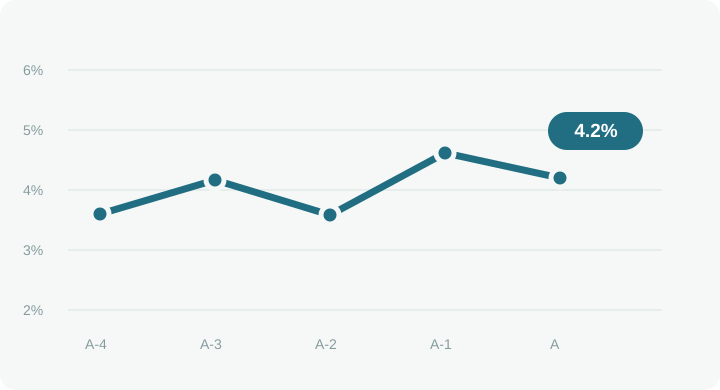

4.2%
연도 A의 실업률 변화
연도 A를 선택한 초기 화면입니다. 학습용 수치를 기반으로 그래프와 설명이 표시됩니다.
이 페이지의 모든 수치는 실제 통계가 아닌 가상 데이터입니다.
실업률 수치를 비교하는 인터랙티브 데이터 페이지입니다. 연도를 선택하면 수치·설명·그래프가 함께 달라지는 기능을 추가하는 실습에 사용합니다.
데이터 비교 살펴보기YEARLY COMPARISON
연도를 선택하면 실업률 수치와 설명, 그래프가 함께 변경됩니다.
연도 A를 선택한 초기 화면입니다. 학습용 수치를 기반으로 그래프와 설명이 표시됩니다.

표시되는 모든 수치는 학습용 가상 데이터입니다.
READ BEFORE USE
실제 프로젝트에서는 공식 통계 자료의 출처를 확인해야 합니다.
값을 바꾸면 설명과 그래프도 동일한 데이터로 갱신해야 합니다.
새 기능을 추가해도 다른 섹션의 구조와 스타일은 유지합니다.